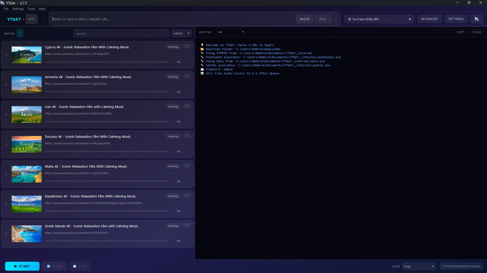
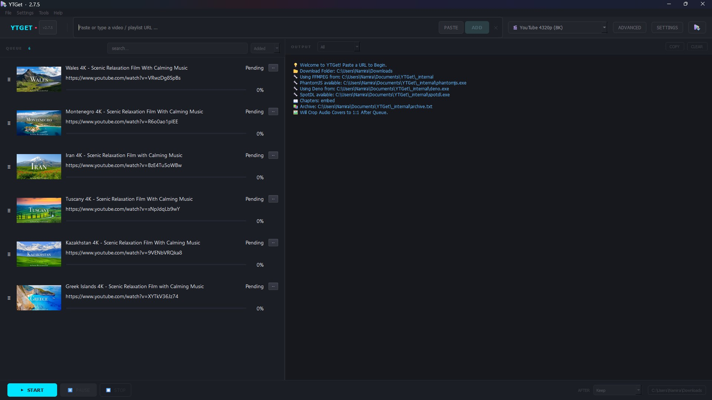
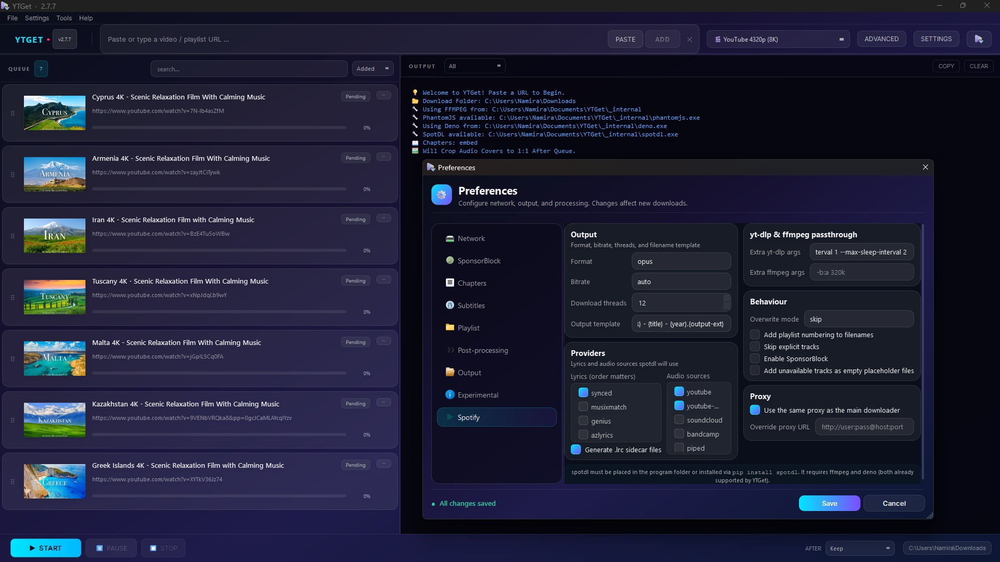
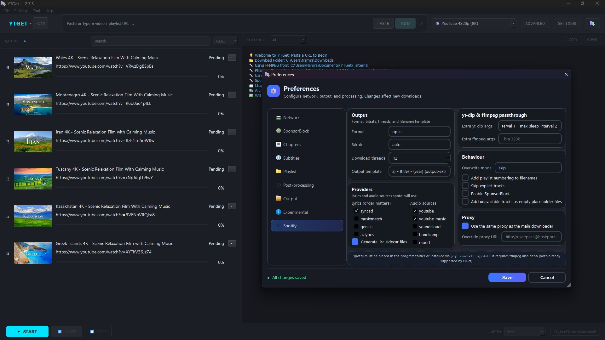

دانلود ویدیو و موسیقی
بدون دردسر.
YTGet یک برنامه دسکتاپ برای یوتیوب، یوتیوب موزیک و بیش از ۷۰ سایت دیگر است. لینک را بچسبانید، کیفیت را انتخاب کنید و بقیه کار را به صف دانلود بسپارید؛ همراه با تگهای MP3، کاور آلبوم، زیرنویس و تصویر بندانگشتی.
ویندوز ۱۰ و ۱۱ (۶۴ بیتی) · بدون نیاز به پایتون · بدون تبلیغ، بدون ردیابی، بدون حساب کاربری.

هر چیزی که لازم دارید، بدون شلوغی
همه چیز حول یک ایده ساخته شده: لینک را بچسبانید و فایلی مرتب، نامگذاریشده و تگخورده بگیرید.
صف دانلود واقعی
هر تعداد لینک که میخواهید اضافه کنید. شروع، توقف موقت، رد کردن یا حذف؛ با نمایش زنده پیشرفت، سرعت و زمان باقیمانده.
MP3 با کاور آلبوم
فایلهای صوتی با تگ کامل و کاور جاسازیشده تحویل داده میشوند و کاور بهمحض پایان هر آیتم بهصورت مربع برش میخورد.
ویدیو تا کیفیت 8K
از 144p تا 4320p هر کیفیتی را انتخاب کنید یا بگذارید YTGet بهترین گزینه را بردارد. صدا و تصویر خودکار ترکیب میشوند.
پلیلیست و آلبوم
یک پلیلیست یا آلبوم کامل را یکجا به صف بدهید؛ با فایل آرشیو، اجرای دوباره فقط موارد جدید را دانلود میکند.
پایش کلیپبورد
هر جا لینکی کپی کنید، YTGet میتواند آن را به صف اضافه کند؛ خودکار یا با پرسیدن، بسته به سایت.
برش بخش دلخواه
با تعیین زمان شروع و پایان فقط همان بخش را بگیرید و حذف بخشهای تبلیغاتی را برای هر آیتم جداگانه تنظیم کنید.
زمانبند
صف را شب اجرا کنید: روز و ساعت شروع و پایان را انتخاب کنید و در پایان سیستم خواب، خاموش یا برنامه بسته شود.
نامگذاری منطقی
قالب نام دلخواه، زیرنویس، فصلها و تصویر بندانگشتی؛ کتابخانهتان بدون تغییر نام دستی مرتب میماند.
تازه در ۲.۸.۰ جدید
نصبکننده کامل ویندوز، تخمین حجم در صف، افزودن چند فرمت از یک ویدیو، اجرای سریعتر برنامه و ۷۶ سایت شناساییشده.
دانلود YTGet
آخرین نسخه: 2.8.0 · یادداشت انتشار
- ساخت شورتکات و حذف آسان برنامه
- اجرای خودکار با ویندوز (اختیاری)
- نصب برای کاربر جاری، بدون نیاز به دسترسی مدیر
- بدون نصب - از حالت فشرده خارج کنید و
YTGet.exeرا اجرا کنید - مناسب فلش مموری
- هر قالب فشردهای که دوست دارید
- ویندوز، مک و لینوکس
- پایتون ۳.۱۰ یا جدیدتر
pip install ytget-gui
ytget-guiبرای هر نسخه فایل چکسام SHA-256 منتشر میشود تا سلامت دانلود را بررسی کنید. همه بیلدها بهصورت عمومی با GitHub Actions از همین مخزن ساخته میشوند.
شروع کار
تقریباً دو دقیقه از ابتدا تا انتها.
- نصبکننده را دانلود و اجرا کنید. ویندوز ممکن است هشدار «ناشر ناشناس» بدهد چون برنامه امضای دیجیتال ندارد؛ روی More info و سپس Run anyway بزنید.
- بگذارید ابزارهایش را بگیرد. در اولین اجرا، YTGet خودش yt-dlp و FFmpeg را دانلود میکند.
- لینک را بچسبانید و Fetch را بزنید تا عنوان، مدت و فرمتهای موجود را ببینید.
- فرمت را انتخاب کنید - یک کیفیت ویدیو یا MP3 / FLAC / M4A برای صدا - و Add to queue را بزنید.
- Start را بزنید. فایلها در پوشه دانلود شما ذخیره میشوند؛ با راستکلیک روی هر آیتم تمامشده میتوانید آن را باز کنید یا در پوشه نشان دهید.
نکته: در Preferences میتوانید پوشه دانلود، قالب نامگذاری، زبان زیرنویس، پایش کلیپبورد و زمانبند را تنظیم کنید. همه تنظیمات ذخیره میشوند.
نگاهی به برنامه
رابط تیره و تمیز که سر راهتان نیست.



۷۶ سایت شناساییشده
قلب YTGet یوتیوب و یوتیوب موزیک است، اما لینک این سایتها هم شناسایی میشود - و هزاران سایت دیگر از طریق yt-dlp کار میکنند.
خودتان انتخاب میکنید که پایش کلیپبورد با لینک سایتهای بیرون از فهرست چه کند: خودکار به صف اضافه کند، اول بپرسد، یا نادیده بگیرد.
پرسشهای پرتکرار
آیا YTGet رایگان است؟
بله، کاملاً رایگان و متنباز با مجوز MIT. بدون تبلیغ، بدون حساب کاربری و بدون جمعآوری اطلاعات.
چرا ویندوز درباره نصبکننده هشدار میدهد؟
چون برنامه امضای دیجیتال ندارد و گواهی امضا برای یک پروژه رایگان گران است. روی More info و بعد Run anyway بزنید. میتوانید قبلش فایل را با چکسام SHA-256 منتشرشده بررسی کنید.
باید پایتون یا yt-dlp و FFmpeg نصب کنم؟
نه. نسخه ویندوز همهچیز را همراه دارد و YTGet خودش yt-dlp و FFmpeg را دانلود و بهروز میکند.
فایلها کجا ذخیره میشوند؟
هر جا که در تنظیمات انتخاب کنید؛ بهطور پیشفرض پوشه Downloads. تنظیمات و لاگها در %LOCALAPPDATA%\YTGet قرار میگیرند.
روی مک یا لینوکس کار میکند؟
بله، از طریق سورس: pip install ytget-gui و بعد اجرای ytget-gui. فعلاً فقط ویندوز نسخه آماده دارد.
چطور باگ گزارش کنم یا ویژگی بخواهم؟
در گیتهاب یک issue باز کنید. ذکر لینک استفادهشده و فایل لاگ کمک زیادی میکند.